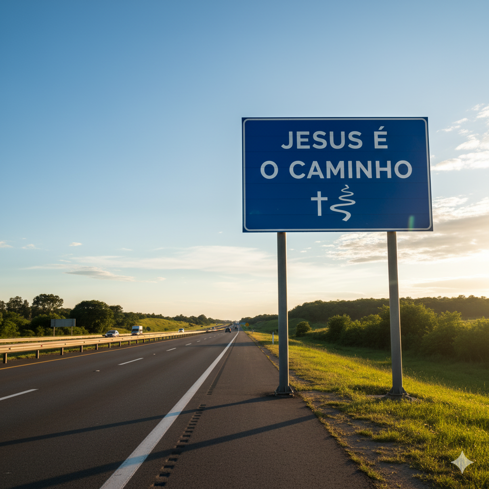
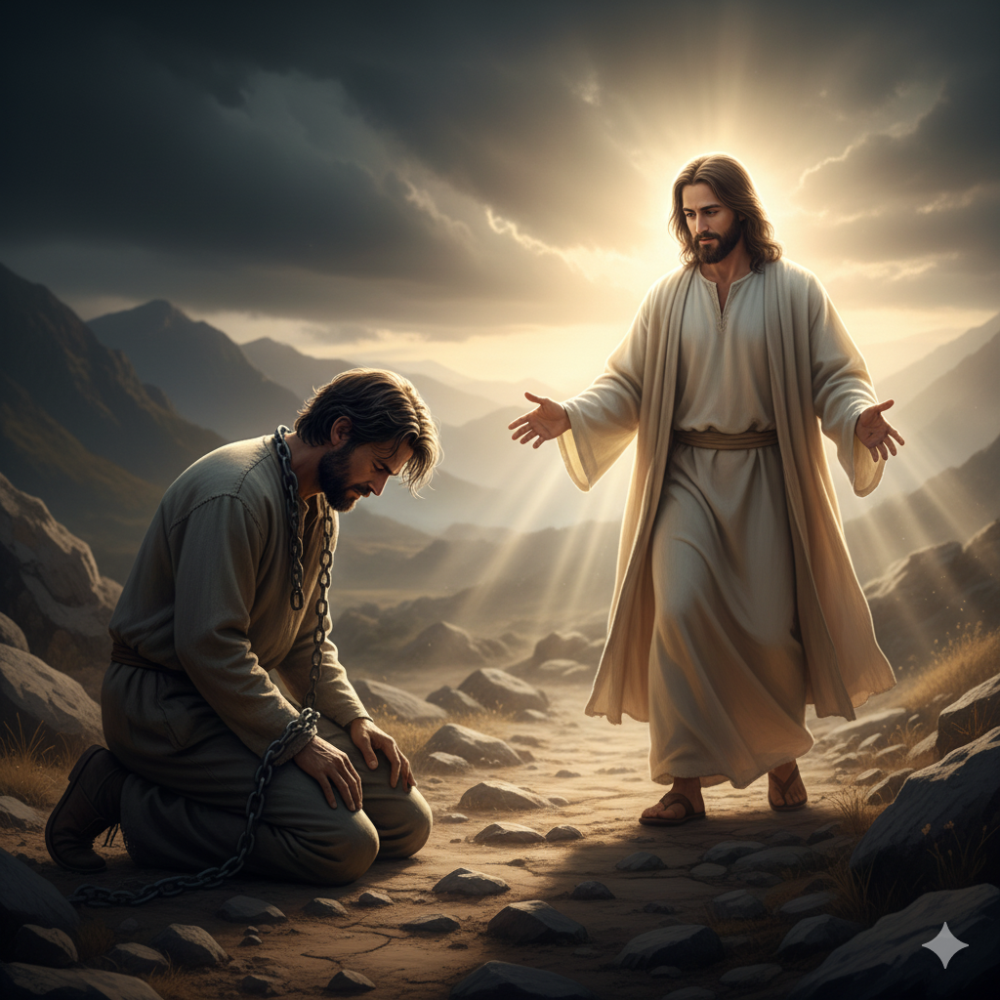

Missão
"Disse-lhe Jesus: Eu sou o caminho, a verdade, e a vida; ninguém vem ao Pai, senão por mim." João 16:6

Visão
" Vinde a mim, todos os que estais cansados e oprimidos, e eu vos aliviarei. " Mateus 11:28

Valores
"Porque Deus amou tanto o mundo, que deu o seu Filho unigênito, para que não morra todo o que nele crer, mas tenha a vida eterna." joão 3:16